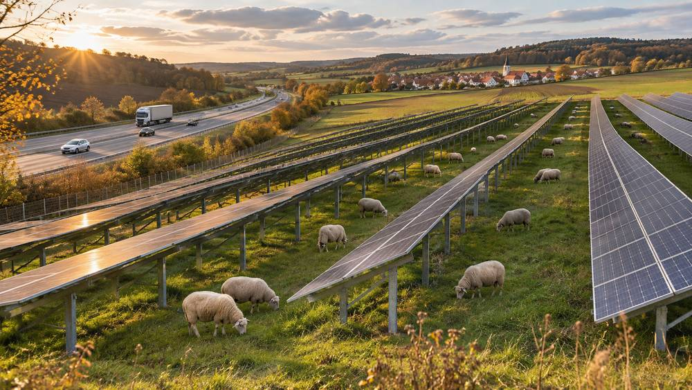

독일 키르히아르트 고속도로변 30MW 시민 태양광

조합원이 1,300명 넘는 크라이히가우 시민에너지협동조합이 2028년 건설을 목표로 100유로 출자·900유로 대출 묶음을 내놨다.
독일 키르히아르트에서 시민에너지협동조합이 A6 고속도로변에 약 30MWp 규모 태양광 발전소를 계획하고 있다. 사업을 맡은 크라이히가우 시민에너지협동조합(BEG Kraichgau)은 11월 19일 저녁 키르히아르트 시청 회의실에서 여는 주민 설명회(Bürger.Forum) 일정을 사업 안내와 행사 달력에 올렸다.
발전소는 고속도로변 200m 구역 안 여러 필지에 들어서며, 모듈 면적은 약 17ha다. 한 해 약 30GWh를 만들 계획인데, 가구당 연 2,800kWh로 치면 약 1만700가구가 쓰는 양이다. 조합은 이 발전량이 상업·산업을 포함한 마을 연간 전기 사용량 추정치의 약 80%에 이른다고 계산했다. 사업은 계획·인허가 단계로, 2026년 가을 종(種) 보호 조사를 마쳤고 2028년 건설이 목표다. 조합은 이 수치가 지금 계획 기준이라 절차에 따라 바뀔 수 있다고 밝혔다.
참여하려면 조합원이 되어야 하는데 키르히아르트 밖에 살아도 되며, 출자금은 1좌 100유로다. 참여 묶음은 출자 1좌와 10년 만기 고정금리 후순위 대출 900유로로 짜였다. 조합은 2010년 세워져 1,300명 넘는 시민이 함께하고 있으며, 배당은 총회에서 정하는데 지금까지 평균 약 3%였다. 조합원은 가진 출자 좌수와 관계없이 총회에서 한 표씩 갖는다.
조합은 마을에 돌아갈 몫으로 영업세 수입 가능성과 재생에너지법(EEG) 제6조에 따른 지급 계획을 들었다. 키르히아르트에는 2015년 이 조합을 포함한 협동조합 4곳이 함께 A6 방음 둑 위에 세운 시민 태양광이 이미 있다. 조합은 시청과 학교, 수영장, 유치원, 요양원에 나무 칩과 태양열로 만든 열을 대는 마을 난방도 잇고 있다.
시민에너지 관점
출자 100유로와 후순위 대출 900유로, 모두 1,000유로면 마을 전기의 약 80%를 만들 발전소의 공동 주인이 될 수 있다. 큰 태양광이 마을에 무엇을 남기느냐는 걱정에 조합은 영업세와 법정 지급이라는 항목으로 답하고, 인허가 단계부터 주민 설명회를 열고 있다. 출자 규모와 관계없이 한 사람이 한 표를 갖는 구조라 이익을 어디에 쓸지 주민이 직접 정할 수 있다. 우리 지자체도 고속도로·철도변 유휴 부지를 찾아 주민 협동조합이 먼저 사업을 맡을 수 있게 길을 열자.
출처: 크라이히가우 시민에너지협동조합(BEG Kraichgau) 날짜 표시 없음(2026-11-21 열람) 사업 안내 「Bürger.Solarpark Kirchardt」(11월 19일 주민 설명회 안내 포함) 원문 보기
출처: 크라이히가우 시민에너지협동조합(BEG Kraichgau) 2026-11-21 열람 누리집 행사 달력 「19.11.2026 Bürger.Forum Bürger.Solarpark Kirchardt」 원문 보기